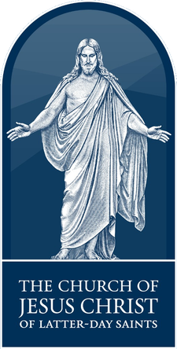
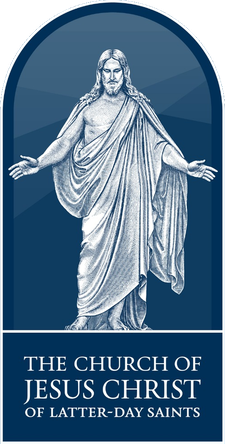

Background Information
- Hunter was born on October 5th, 2000 in Fairfax, VA
- Parents: Clay and Kimberly Auch
- Hometown: Ashburn, VA
- Oldest of 5 kids
- Kennedy (20), Parker (17), Colton (17), Sadie (14)
Education 
- Student at Brigham Young University
- Marriott School of Business
- Bachelor of Science in Accounting
- Member of
- BYU Rollins Center “Creators”
- BYU Accounting Society
- Social Venture Academy
Work Experience 
- Tanz Tyres (Social Impact Shoe Company Startup)
- Currently developing a business model with anticipated annual profitability of ~$75,000
- Working with government officials in Tanzania on topics of supply chain
- MPWR (Summer Sales Company)
- Provided technical information about solar power, solar systems equipment, and services to potential customers
- Conducted tabletop presentations for residents interested in solar power
- Educated homeowners about the benefits of residential solar power
- Independent Landscape Contracting
- Oversaw operations of equipment organization
- Executed tasks prepared by homeowner with exactness
- Managed and kept track of progress and hours
Leadership and Service  

- The Church of Jesus Christ of Latter-day Saints
- Volunteer Representative in Dar es Salaam, Tanzania
- Selected to serve in leadership positions responsible for the training and performance of 20+ volunteers
- Conducted weekly training, weekly progress reports and statistical analysis reports based on volunteer service
- Pioneered establishment of 3 volunteer service groups in 2 different provinces of Tanzania
Awards and Skills
- Near-native proficiency in Swahili
- Eagle Scout, Boy Scouts of America
- Passionate about innovating economic growth in Eastern African communities